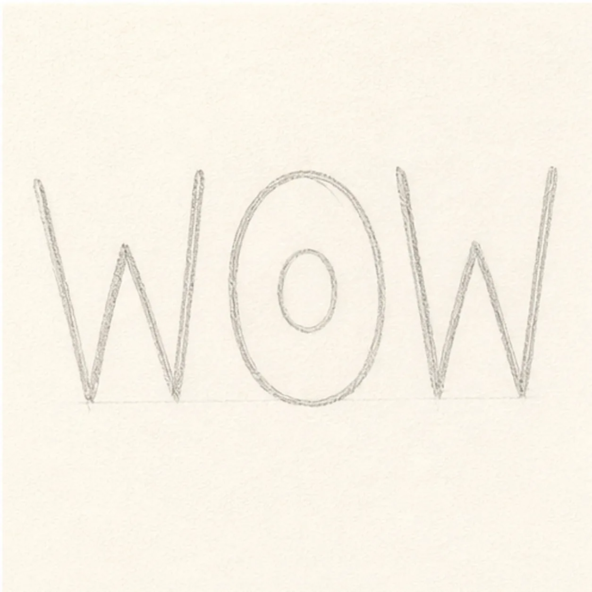
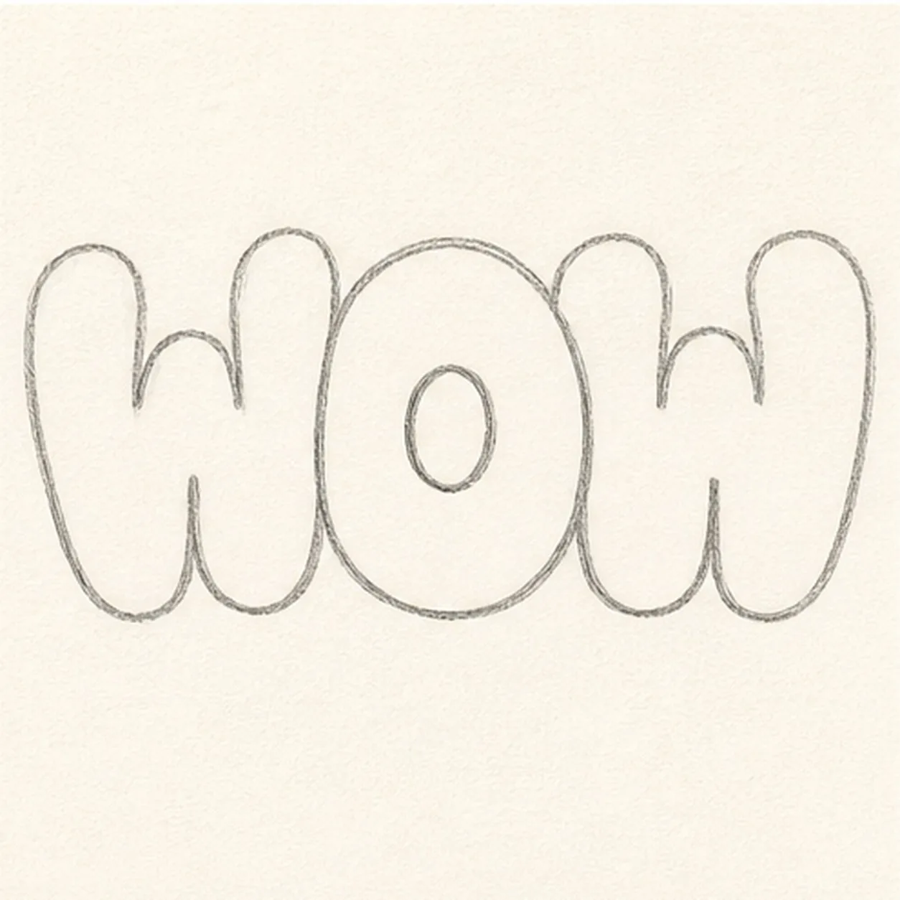
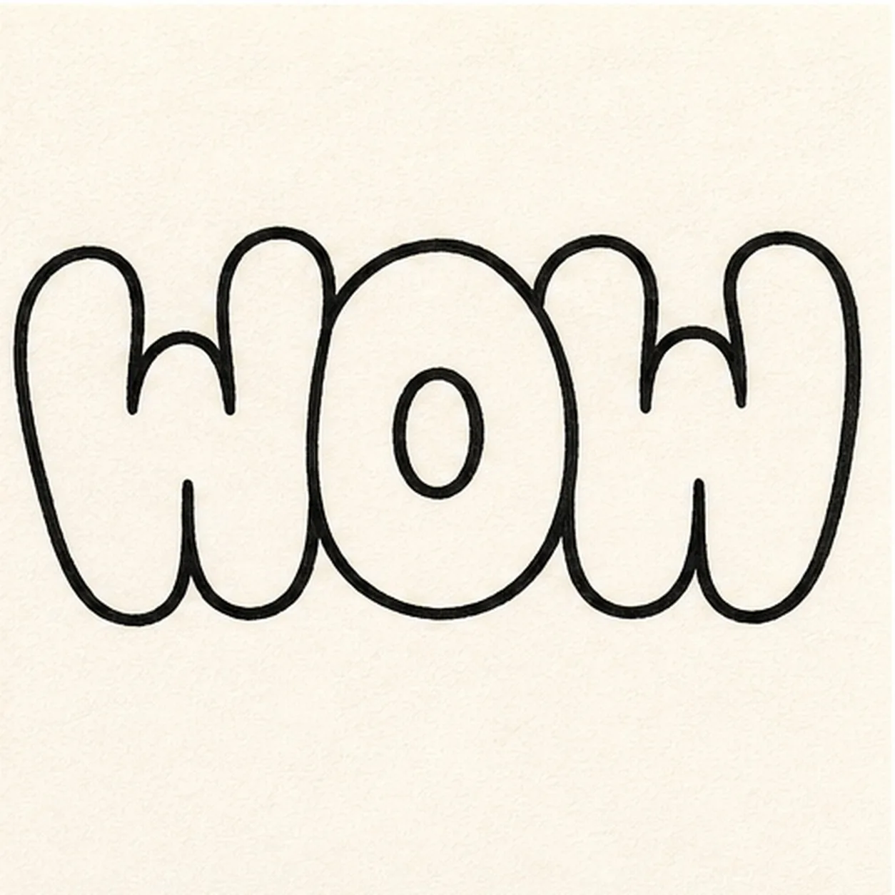
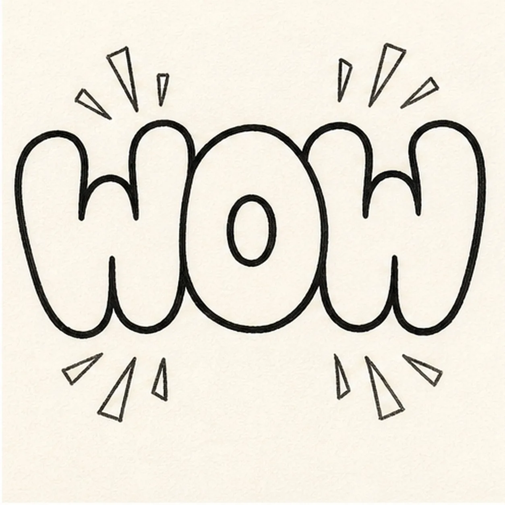
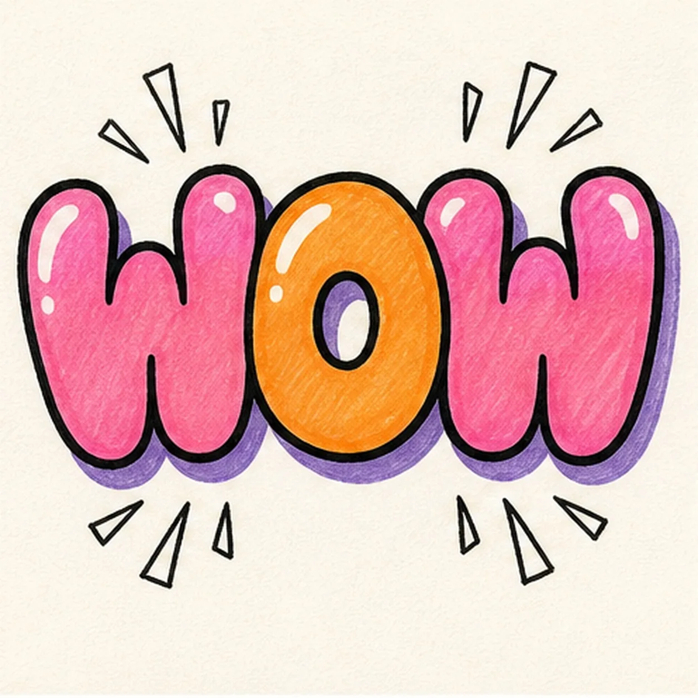

Felt-tip marker mode
Let's doodle a bubble-letter WOW
Treat this as one playful practice round: sketch the idea loosely, simplify the shapes, then commit with confident marker outlines and bright fills.
-
01

Sketch the WOW
Write a light W O W guide across one baseline, leaving extra space around every letter.
Doodle tip: The guide can be loose. You are drawing a scaffold for bubble letters, not final handwriting.
-
02

Bubble the letters
Wrap rounded outlines around each letter and keep the center of the O open.
Doodle tip: Make the W corners soft and puffy. Sharp zigzags will make the word feel less bubbly.
-
03

Ink the word
Trace the bubble letters with a thick black marker, following the rounded outlines already on the page.
Doodle tip: Pause around the O center so the hole stays clear after the outline gets thicker.
-
04

Pop the burst marks
Add small comic burst marks around the word without touching the letter shapes.
Doodle tip: Keep the bursts outside the word. They should make the WOW louder, not harder to read.
-
05

Fill the loud color
Fill the W letters pink and the O orange, leave white shine gaps, and add a purple drop shadow behind the word.
Doodle tip: Color inside the black outline first, then add the shadow so it tucks behind the letters.
-
06
Make the WOW shout
Reinforce the existing outline and burst marks, deepen the marker fills, and clean up the shine gaps and drop shadow.
Doodle tip: Do not add more words. One bold WOW with a few burst marks is easier to read.